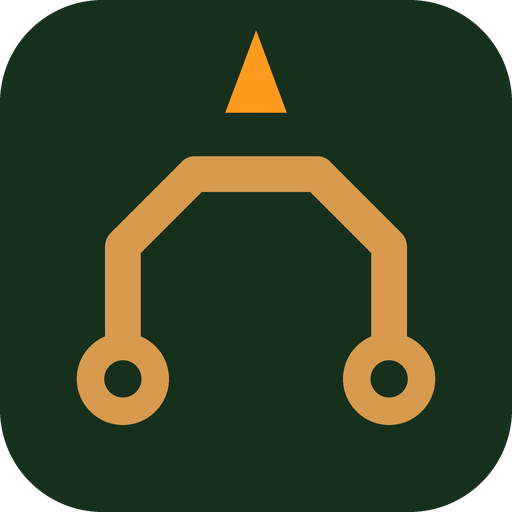
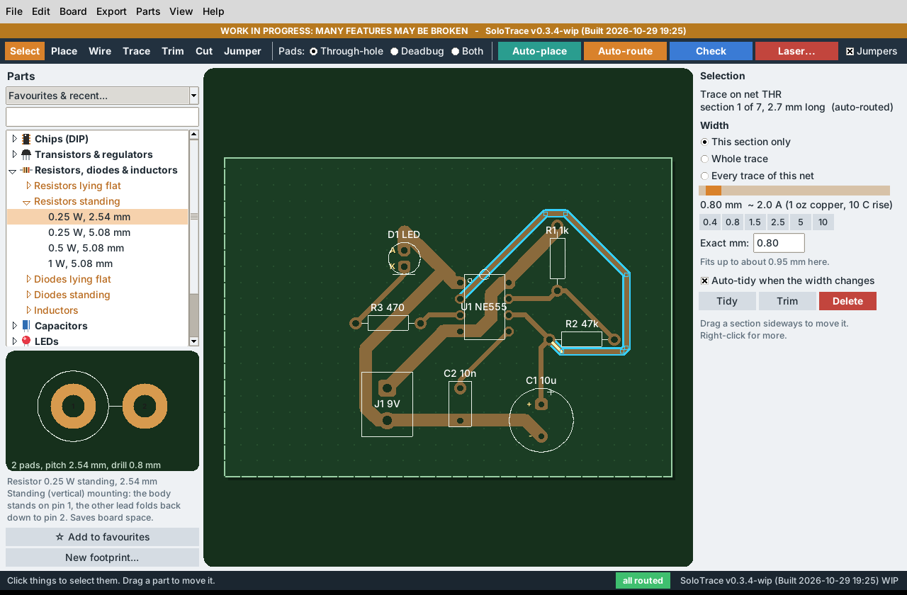

Easy single-sided PCBs for quick prototypes
Real full-size parts, traces up to 10 mm wide with a slider, every corner chamfered, an autorouter that avoids the tangled-string look, and output for toner transfer, Gerber fabs and a gantry diode laser (Elegoo Phecda) with a negative option and adjustable trace gap.

Chips, transistors & regulators, resistors (flat and standing), diodes, inductors, caps, pots, connectors. A tree with expand arrows and a live drawing of the part in the sidebar.
A footprint wizard (pad table, click-to-add, DIP and header presets) and KiCad .kicad_mod import.
Click a trace section or a whole net, drag the slider. Shows roughly how many amps it carries.
Every corner is chamfered by construction, and the checker flags anything sharper than 45°.
No hole, extra copper to bend a lead flat and solder on the copper side. Per part or per pad.
Prefers straight runs and clean 45° bends, rips up and retries, then adds wire-link jumpers instead of tangles.
Gerber + drill zip, 1:1 mirrored PDF/SVG, BOM, and G-code for the Elegoo Phecda.
Drag a section sideways and its neighbours follow at 45°. Trim a section out, split a trace, tidy it. Right-click anything for its menu.
Shift + wire two pins and the router joins them with a direct trunk first; the rest of the net branches off it. Drawn in orange.
B C E, G D S, K A, IN GND OUT, optocoupler and 555 / op-amp layouts beside the pads, and the part value on the board.
Wide traces leave pads straight and land on the pad centre, and the panel says how wide a trace can go and still fit.
Negative, isolation and positive modes, trace adjust, gap, line interval, speed, power, passes, crosshatch, test cards, frame file.
Screenshots are the real program on a Linux test machine with the built-in example boards.
| Item | Status |
|---|---|
| Laser G-code on a real Elegoo Phecda | Never run on a real machine. Speeds, powers and spot sizes are starting guesses; use the test cards. |
| Windows and macOS launchers, GitHub workflows | Written, not run. |
| Floating slider pop-up | Not built: the slider is in the right-hand panel (preset widths are also on the right-click menu). |
| Push-and-shove when dragging traces | Not built: a dragged trace can end up too close to others; the clash is marked in red. |
| Full negotiated-congestion or topological router, C++ speed-up | Not built. The router is pure Python and can be slow on big boards. |
| Soldermask, copper pours, multi-layer, SMD | Out of scope. |
Download the zip, unzip it, and double-click the file for your system:
SoloTrace-Linux.sh (needs python3-tk)SoloTrace-Windows.bat (Python from python.org, tcl/tk ticked)SoloTrace-Mac.command (Python from python.org; first time right-click > Open)If something is missing, the launcher says exactly what to install.
python3 src/main.py python3 src/main.py --version
Needs Python 3.8+ with tkinter and nothing else.
A diode laser can blind you and start fires, and etchant and burnt-paint fumes are harmful. Wear laser safety glasses rated for your module, ventilate, never leave it running unattended, and check every print against your real parts before etching. A diode laser cannot remove bare copper: paint, burn the paint away, then etch.